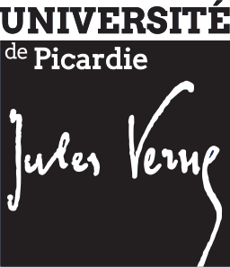
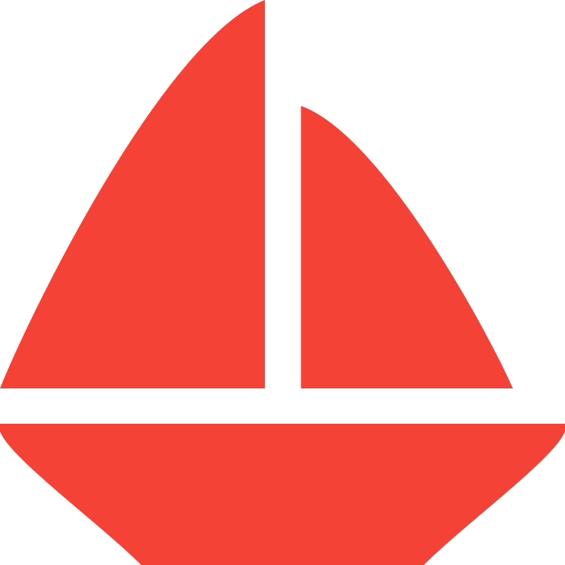

- aurore.leclerc.lefranc@outlook.fr
- linkedin.com/in/aurore-leclerc-373936221/
- github.com/auroreLeclerc
- En attente
- Saint-Leu-la-Forêt (95320)
- Amiens (80000)
- Myers Briggs Type Indicator : I.N.T.P.
FORMATION
2022 - 2024
Alternance
Alternance


Master Informatique M.I.A.G.E. spécialité Systèmes d’Information en Santé
, à l’Université de Picardie Jules-Verne, campus d'Amiens (80000) dans le pôle Scientifique Saint-Leu.
2021 - 2022
Alternance
Licence Informatique M.I.A.G.E.
, à Université Paris Cité (anciennement Paris 5 Descartes), campus Rives de Seine (75016).2019 - 2021
DUT Informatique
, à l’Université Sorbonne Paris Nord (anciennement Paris 13) au campus de Villetaneuse (93430).2017 - 2019
Baccalauréat Scientifique - Sciences de la Vie et de la Terre
, option Informatique (I.S.N.), au lycée Jacques Prévert à Taverny (95150).EXPÉRIENCE
29/09/2021
-
02/09/2022
-
02/09/2022
NodeJS Developer, BPI - iRPA (FR) :
alternance d’une année dans SAP à Levallois-Perret (92300), au service iRPA. Au début pour faire des tests unitaires NodeJS ainsi que des JIRA pour me familiariser avec l’application du service. Une application en Electron d’automatisation (dans mes missions, de Microsoft Office Desktop). Ensuite j'ai participé au développement d'un nouveau service de ladite application pour l’automatisation des services Microsoft Office Cloud.
12/04/2021
-
02/07/2021
-
02/07/2021
PHP Full Stack Trainee Developer :
stage de 12 semaines dans Givaudan à Argenteuil (95100), département informatique. Pour reconstruire une application d’intranet existant en responsive avec PHP, MySQL, JS, CSS, HTML. Une application originalement codée pour Internet Explorer.COMPÉTENCES
En langages de programmation :
- HTML ; CSS ; PWA ; PHP (MVC)
- SQL (PostgreSQL ; MySQL/MariaDB ; OracleDB)
- JavaScript ; DOM ; AJAX/Fetch ; JSON
- NodeJS ; Yarn/Npm ; Electron ; Unit tests (Sinon.JS)
- Bash (Ubuntu Server ; Manjaro Desktop)
- Python 3
- Java ; Java EE (Spring) ; UML
Artistiques :
- PhotoFiltre7 (retouche photo)
- Inkscape (dessin vectoriel)
Bureautiques :
- Suite LibreOffice
- Suite Microsoft Office
Linguistiques :
- Anglais avancé
 PASSIONS
Mes centres d’intérêt tournent en majeure partie autour de l’informatique autant en programmation personnelle ainsi qu’en bidouillages divers.
De mon côté j’ai aussi acquis un petit niveau artistique autant en CSS qu’en dessin vectoriel.
Pour autant je passe une grande partie de mon temps à me renseigner dans divers domaines tels que la biologie, la philosophie, la psychologie, la sociologie, l’économie, l’expression artistique...
Grâce à divers vulgarisateur·rice·s sur différentes plateformes web.